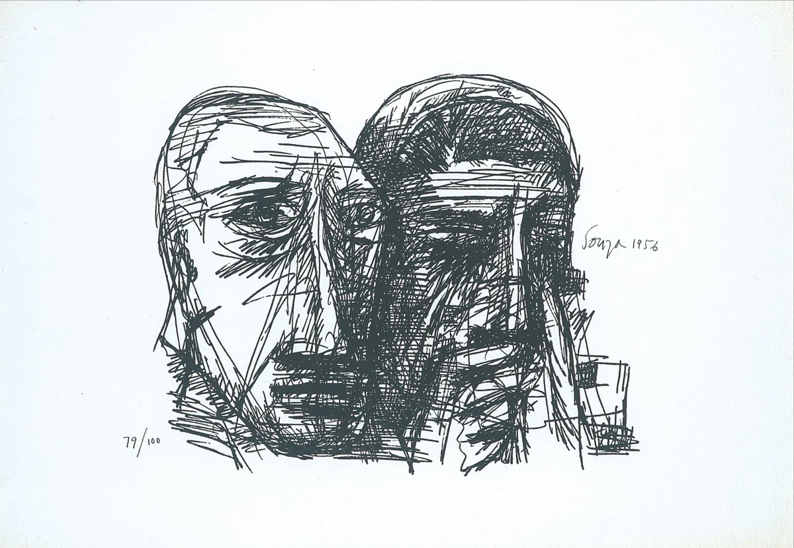

Art of F.N
Artist: francis newton souza
Francisco Victor Newton de Souza (12 April 1924 – 28 March 2002), better known as F. N. Souza, was an artist of modern Indian painting, and a founding member of the Bombay Progressive Artists' Group. His style exhibited both decadence and primitivism
Year: 1924-2002
Medium: Indian artist
Dimensions: 48 x 96 in. (121.9 x 243.8 cm.)
Location: India
Price: $377 Million